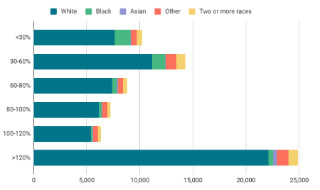
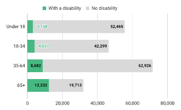
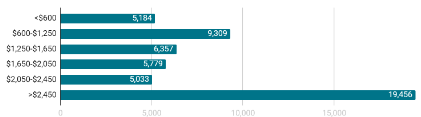
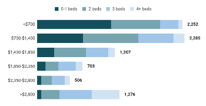

MACOG Regional Housing Dashboard |Overview | Indicators | Solutions | Next steps
MACOG Regional Housing Dashboard |Overview | Indicators | Solutions | Next steps
MACOG Regional Housing Dashboard |Overview | Indicators | Solutions | Next steps
This dashboard was created by CommunityScale for the MACOG. The objective of this dashboard is to outline the plan's objectives and priorities, share key observations and findings about the local housing landscape, and highlight recommended strategies to increase housing production and address affordability challenges.
 Overview
OverviewA foundational component of MACOG's Regional Housing Plan, this Housing Needs Assessment is the result of extensive quantitative data analysis and stakeholder engagement to understand housing needs and opportunties in Elkhart County.
 People
PeopleThe following section profiles the people of Elkhart County, detailing characteristics such as income, employment, household structure, and cost burden. These indicators combine to describe the local population's housing needs and preferences which inform this report's recommended strategies for new housing production to meet demand and fill gaps in affordability and attainability.
Elkhart County’s population has been aging over the past decade, with the 65+ age group growing faster than other groups and projected to outpace others into the future. In general, younger households are more likely to prefer family-oriented housing and neighborhoods where as older households may have a broader range of preferences and priorities, including senior options.
The chart at left illustrates trends in population by age cohort, both historic and projected. The projection is based on recent trends extended. Depending on economic, policy, and other conditions, the future age distribution may vary over time. The chart below summarizes net household change by age group.
The following analysis examines household characteristics and housing need in terms of household incomes relative to the local Area Median Income (AMI). For example, households within the "60-80%" group earn between 60% and 80% of the HUD-established AMI for the metro area. Each household AMI group has a different need for monthly housing costs.
These households typically represent a community’s “middle class” workforce, including public safety officers, skilled nurses, educators, and municipal employees. MACOG’s low proportion of 80-120% AMI households is likely a result of limited available housing options at price points this group can afford, requiring they live elsewhere.
Elkhart County’s household population has grown slowly since 2010. In terms of relative income levels, most of the growth has been concentrated among higher-income households, especially the >120% AMI group.
| AMI Group | 2010 | 2022 | 2034 |
|---|---|---|---|
| Below 30% | 16,465 | 17,090 | 17,319 |
| 30-60% | 22,569 | 21,886 | 20,799 |
| 60-80% | 12,404 | 12,855 | 12,740 |
| 80-100% | 10,331 | 10,701 | 10,850 |
| 100-120% | 8,789 | 9,120 | 9,572 |
| Above 120% | 29,983 | 35,815 | 41,329 |
These charts break down socioeconomic and demographic indicators by income in terms of AMI level.
Elkhart County’s lowest income groups are its most racially diverse, especially the <30% and 30-60% AMI groups. Other income levels are relatively consistent in their proportional ratios of white and non-white households.

Elkhart County’s families with children are most prevalent in the >120% AMI group. Nonfamily households are predominantly low-income (this group includes one-person households). Families without children (such as couples) are most common at the >120% AMI level.
Most households in the >65 age group have incomes below 60% AMI. Households between 25-64 are most prevalent in the >120% AMI but also particularly numerous in the 30-60% and <30% AMI groups. The small group of youngest households (<25 years) are somewhat more concentrated at lower income levels.
Elkhart County’s resident population includes many people with disabilities that may restrict their housing choices. People with disabilities are most common in the 65+ age group but they are represented across all age groups at some level.

Households are cost burdened when paying more than 30% of their income on housing costs. They are considered severely cost burdened when these costs exceed 50% of their income. For renters, this includes lease rent and utilities. For homeowners, this includes mortgage costs, property taxes, insurance, utilities, and any condo fees.
In Elkhart County, most low-income households are cost burdened. Most households earning >80% AMI are not cost burdened.
PlaceThe following section profiles the community spatially and assesses Elkhart County's housing stock and affordability, detailing characteristics such as structure type, bedroom count, and development timeframe as well as household costs and market pricing for local rental and ownership units.
text...
Elkhart County households have very different housing choices available depending on if they buy or rent, such as in terms of fundamental features like structure type and number of bedrooms.

This graph inventories the local housing stock in terms of each unit's structure type, a characteristic defined as the number of units in the building that contains a given unit.
This graph inventories the local housing stock in terms of bedroom count by unit by tenure. The majority of Elkhart County’s housing units are two bedroom or larger, especially among ownership units.
This chart compares the median listing price in Elkhart County with the home value affordable to a household earning the median household income. A wider gap means higher barrier to entry for first-time homebuyers and increased risk that an existing resident might be priced out of the community if they choose or need to move to a different house.
The calculations behind this chart include consideration of mortgage interest rates, typical down payments, and added monthly costs such as private mortgage insurance, property tax, home insurance, and utilities.
This chart tracks the typical market value for single family homes and condos over the past several years. The adjacent table translates these values into monthly costs (mortgage + tax and other costs).
This chart summarizes the distribution of costs across all ownership units in the area, most of which last transacted years ago.

These charts reveal the significant difference between how much most homeowners currently pay per month (right) and it would cost per month to own a home purchased on today’s market (left). About 45% of MACOG homeowners pay below $1,850/mo compared to the $2,213 and $2,763 required to afford a condo and single family on today’s market.
| Home type | Typical price | Monthly cost |
|---|---|---|
| Single family | $244,406 | $1,945 |
| Condo | $202,291 | $1,632 |
Comparing the needs of current residents with the current housing stock reveals potential misalignments between supply and demand.
This chart simulates the unit mix today’s local population would choose if all households could move into units that match their likely bedroom preferences and willingness to pay.

These charts compare this “need” to the current housing stock. Positive gaps indicate under-supply; negative gaps indicate oversupply.

This is an instructive but largely hypothetical analysis due to the scale of the gap and the challenge of delivering new affordable housing in large quantities.
Nearly three quarters of MACOG’s housing production took place before 1970 with very little new construction in recent years. This table chronicles the community's development history, indicating decades with relatively more or less construction activity. 2020 or later is approximate as new housing units are completed.

Building permitting history is a proxy for construction activity over time. MACOG has seen very little new permits during the past decade. While there are some proposed developments on the horizon, none have reached the building permit stage yet.


The Michiana Area Council of Governments (MACOG) is a voluntary organization of local governments that studies and attempts to resolve areas of interlocal issues.
CommunityScale is a pioneering urban planning and spatial data analysis company serving clients across the United States.
Follow CommunityScale on LinkedIn and Twitter/X
This dashboard is open source MIT license - 2024 CommunityScale